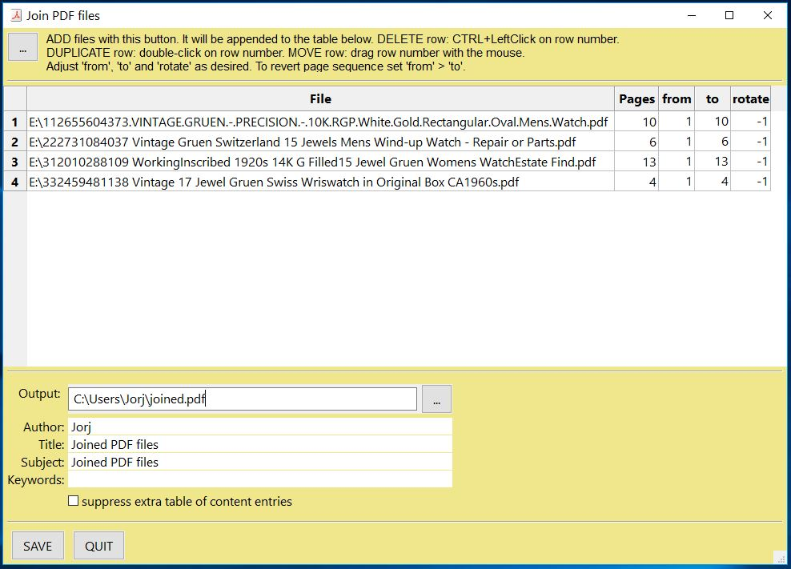
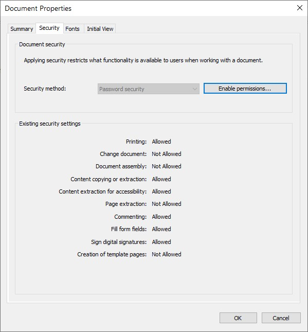

The Basics¶
Opening a File¶
To open a file, do the following:
import pymupdf
doc = pymupdf.open("a.pdf") # open a document
Note
Taking it further
See the list of supported file types and The How to Guide on Opening Files for more advanced options.
Extract text from a PDF¶
To extract all the text from a PDF file, do the following:
import pymupdf
doc = pymupdf.open("a.pdf") # open a document
out = open("output.txt", "wb") # create a text output
for page in doc: # iterate the document pages
text = page.get_text().encode("utf8") # get plain text (is in UTF-8)
out.write(text) # write text of page
out.write(bytes((12,))) # write page delimiter (form feed 0x0C)
out.close()
Of course it is not just PDF which can have text extracted - all the supported document file formats such as MOBI, EPUB, TXT can have their text extracted.
Note
Taking it further
If your document contains image based text content the use OCR on the page for subsequent text extraction:
tp = page.get_textpage_ocr()
text = page.get_text(textpage=tp)
There are many more examples which explain how to extract text from specific areas or how to extract tables from documents. Please refer to the How to Guide for Text.
You can now also extract text in Markdown format.
API reference
Extract images from a PDF¶
To extract all the images from a PDF file, do the following:
import pymupdf
doc = pymupdf.open("test.pdf") # open a document
for page_index in range(len(doc)): # iterate over pdf pages
page = doc[page_index] # get the page
image_list = page.get_images()
# print the number of images found on the page
if image_list:
print(f"Found {len(image_list)} images on page {page_index}")
else:
print("No images found on page", page_index)
for image_index, img in enumerate(image_list, start=1): # enumerate the image list
xref = img[0] # get the XREF of the image
pix = pymupdf.Pixmap(doc, xref) # create a Pixmap
if pix.n - pix.alpha > 3: # CMYK: convert to RGB first
pix = pymupdf.Pixmap(pymupdf.csRGB, pix)
pix.save("page_%s-image_%s.png" % (page_index, image_index)) # save the image as png
pix = None
Note
Taking it further
There are many more examples which explain how to extract text from specific areas or how to extract tables from documents. Please refer to the How to Guide for Text.
API reference
Extract vector graphics¶
To extract all the vector graphics from a document page, do the following:
doc = pymupdf.open("some.file")
page = doc[0]
paths = page.get_drawings()
This will return a dictionary of paths for any vector drawings found on the page.
Merging PDF files¶
To merge PDF files, do the following:
import pymupdf
doc_a = pymupdf.open("a.pdf") # open the 1st document
doc_b = pymupdf.open("b.pdf") # open the 2nd document
doc_a.insert_pdf(doc_b) # merge the docs
doc_a.save("a+b.pdf") # save the merged document with a new filename
Merging PDF files with other types of file¶
With Document.insert_file() you can invoke the method to merge supported files with PDF. For example:
import pymupdf
doc_a = pymupdf.open("a.pdf") # open the 1st document
doc_b = pymupdf.open("b.svg") # open the 2nd document
doc_a.insert_file(doc_b) # merge the docs
doc_a.save("a+b.pdf") # save the merged document with a new filename
Note
Taking it further
It is easy to join PDFs with Document.insert_pdf() & Document.insert_file(). Given open PDF documents, you can copy page ranges from one to the other. You can select the point where the copied pages should be placed, you can revert the page sequence and also change page rotation.
The GUI script join.py uses this method to join a list of files while also joining the respective table of contents segments. It looks like this:
{kind=link}
API reference
Working with Coordinates¶
There is one mathematical term that you should feel comfortable with when using PyMuPDF - “coordinates”. Please have a quick look at the Coordinates section to understand the coordinate system to help you with positioning objects and understand your document space.
Adding a watermark to a PDF¶
To add a watermark to a PDF file, do the following:
import pymupdf
doc = pymupdf.open("document.pdf") # open a document
for page_index in range(len(doc)): # iterate over pdf pages
page = doc[page_index] # get the page
# insert an image watermark from a file name to fit the page bounds
page.insert_image(page.bound(),filename="watermark.png", overlay=False)
doc.save("watermarked-document.pdf") # save the document with a new filename
Note
Taking it further
Adding watermarks is essentially as simple as adding an image at the base of each PDF page. You should ensure that the image has the required opacity and aspect ratio to make it look the way you need it to.
In the example above a new image is created from each file reference, but to be more performant (by saving memory and file size) this image data should be referenced only once - see the code example and explanation on Page.insert_image() for the implementation.
API reference
Adding an image to a PDF¶
To add an image to a PDF file, for example a logo, do the following:
import pymupdf
doc = pymupdf.open("document.pdf") # open a document
for page_index in range(len(doc)): # iterate over pdf pages
page = doc[page_index] # get the page
# insert an image logo from a file name at the top left of the document
page.insert_image(pymupdf.Rect(0,0,50,50),filename="my-logo.png")
doc.save("logo-document.pdf") # save the document with a new filename
Note
Taking it further
As with the watermark example you should ensure to be more performant by only referencing the image once if possible - see the code example and explanation on Page.insert_image().
API reference
Rotating a PDF¶
To add a rotation to a page, do the following:
import pymupdf
doc = pymupdf.open("test.pdf") # open document
page = doc[0] # get the 1st page of the document
page.set_rotation(90) # rotate the page
doc.save("rotated-page-1.pdf")
Cropping a PDF¶
To crop a page to a defined Rect, do the following:
import pymupdf
doc = pymupdf.open("test.pdf") # open document
page = doc[0] # get the 1st page of the document
page.set_cropbox(pymupdf.Rect(100, 100, 400, 400)) # set a cropbox for the page
doc.save("cropped-page-1.pdf")
Attaching Files¶
To attach another file to a page, do the following:
import pymupdf
doc = pymupdf.open("test.pdf") # open main document
attachment = pymupdf.open("my-attachment.pdf") # open document you want to attach
page = doc[0] # get the 1st page of the document
point = pymupdf.Point(100, 100) # create the point where you want to add the attachment
attachment_data = attachment.tobytes() # get the document byte data as a buffer
# add the file annotation with the point, data and the file name
file_annotation = page.add_file_annot(point, attachment_data, "attachment.pdf")
doc.save("document-with-attachment.pdf") # save the document
Note
Taking it further
When adding the file with Page.add_file_annot() note that the third parameter for the filename should include the actual file extension. Without this the attachment possibly will not be able to be recognized as being something which can be opened. For example, if the filename is just “attachment” when view the resulting PDF and attempting to open the attachment you may well get an error. However, with “attachment.pdf” this can be recognized and opened by PDF viewers as a valid file type.
The default icon for the attachment is by default a “push pin”, however you can change this by setting the icon parameter.
API reference
Embedding Files¶
To embed a file to a document, do the following:
import pymupdf
doc = pymupdf.open("test.pdf") # open main document
embedded_doc = pymupdf.open("my-embed.pdf") # open document you want to embed
embedded_data = embedded_doc.tobytes() # get the document byte data as a buffer
# embed with the file name and the data
doc.embfile_add("my-embedded_file.pdf", embedded_data)
doc.save("document-with-embed.pdf") # save the document
Note
Taking it further
As with attaching files, when adding the file with Document.embfile_add() note that the first parameter for the filename should include the actual file extension.
API reference
Deleting Pages¶
To delete a page from a document, do the following:
import pymupdf
doc = pymupdf.open("test.pdf") # open a document
doc.delete_page(0) # delete the 1st page of the document
doc.save("test-deleted-page-one.pdf") # save the document
To delete a multiple pages from a document, do the following:
import pymupdf
doc = pymupdf.open("test.pdf") # open a document
doc.delete_pages(from_page=9, to_page=14) # delete a page range from the document
doc.save("test-deleted-pages.pdf") # save the document
What happens if I delete a page referred to by bookmarks or hyperlinks?¶
A bookmark (entry in the Table of Contents) will become inactive and will no longer navigate to any page.
A hyperlink will be removed from the page that contains it. The visible content on that page will not otherwise be changed in any way.
Note
Taking it further
The page index is zero-based, so to delete page 10 of a document you would do the following doc.delete_page(9).
Similarly, doc.delete_pages(from_page=9, to_page=14) will delete pages 10 - 15 inclusive.
API reference
Re-Arranging Pages¶
To change the sequence of pages, i.e. re-arrange pages, do the following:
import pymupdf
doc = pymupdf.open("test.pdf") # open a document
doc.move_page(1,0) # move the 2nd page of the document to the start of the document
doc.save("test-page-moved.pdf") # save the document
Copying Pages¶
To copy pages, do the following:
import pymupdf
doc = pymupdf.open("test.pdf") # open a document
doc.copy_page(0) # copy the 1st page and puts it at the end of the document
doc.save("test-page-copied.pdf") # save the document
Selecting Pages¶
To select pages, do the following:
import pymupdf
doc = pymupdf.open("test.pdf") # open a document
doc.select([0, 1]) # select the 1st & 2nd page of the document
doc.save("just-page-one-and-two.pdf") # save the document
Note
Taking it further
With PyMuPDF you have all options to copy, move, delete or re-arrange the pages of a PDF. Intuitive methods exist that allow you to do this on a page-by-page level, like the Document.copy_page() method.
Or you alternatively prepare a complete new page layout in form of a Python sequence, that contains the page numbers you want, in the sequence you want, and as many times as you want each page. The following may illustrate what can be done with Document.select()
doc.select([1, 1, 1, 5, 4, 9, 9, 9, 0, 2, 2, 2])
Now let’s prepare a PDF for double-sided printing (on a printer not directly supporting this):
The number of pages is given by len(doc) (equal to doc.page_count). The following lists represent the even and the odd page numbers, respectively:
p_even = [p in range(doc.page_count) if p % 2 == 0]
p_odd = [p in range(doc.page_count) if p % 2 == 1]
This snippet creates the respective sub documents which can then be used to print the document:
doc.select(p_even) # only the even pages left over
doc.save("even.pdf") # save the "even" PDF
doc.close() # recycle the file
doc = pymupdf.open(doc.name) # re-open
doc.select(p_odd) # and do the same with the odd pages
doc.save("odd.pdf")
For more information also have a look at this Wiki article.
The following example will reverse the order of all pages (extremely fast: sub-second time for the 756 pages of the Adobe PDF References):
lastPage = doc.page_count - 1
for i in range(lastPage):
doc.move_page(lastPage, i) # move current last page to the front
This snippet duplicates the PDF with itself so that it will contain the pages 0, 1, …, n, 0, 1, …, n (extremely fast and without noticeably increasing the file size!):
page_count = len(doc)
for i in range(page_count):
doc.copy_page(i) # copy this page to after last page
API reference
Adding Blank Pages¶
To add a blank page, do the following:
import pymupdf
doc = pymupdf.open(...) # some new or existing PDF document
page = doc.new_page(-1, # insertion point: end of document
width = 595, # page dimension: A4 portrait
height = 842)
doc.save("doc-with-new-blank-page.pdf") # save the document
Note
Taking it further
Use this to create the page with another pre-defined paper format:
w, h = pymupdf.paper_size("letter-l") # 'Letter' landscape
page = doc.new_page(width = w, height = h)
The convenience function paper_size() knows over 40 industry standard paper formats to choose from. To see them, inspect dictionary paperSizes. Pass the desired dictionary key to paper_size() to retrieve the paper dimensions. Upper and lower case is supported. If you append “-L” to the format name, the landscape version is returned.
Here is a 3-liner that creates a PDF: with one empty page. Its file size is 460 bytes:
doc = pymupdf.open()
doc.new_page()
doc.save("A4.pdf")
API reference
paperSizes
Inserting Pages with Text Content¶
Using the Document.insert_page() method also inserts a new page and accepts the same width and height parameters. But it lets you also insert arbitrary text into the new page and returns the number of inserted lines.
import pymupdf
doc = pymupdf.open(...) # some new or existing PDF document
n = doc.insert_page(-1, # default insertion point
text = "The quick brown fox jumped over the lazy dog",
fontsize = 11,
width = 595,
height = 842,
fontname = "Helvetica", # default font
fontfile = None, # any font file name
color = (0, 0, 0)) # text color (RGB)
Note
Taking it further
The text parameter can be a (sequence of) string (assuming UTF-8 encoding). Insertion will start at Point (50, 72), which is one inch below top of page and 50 points from the left. The number of inserted text lines is returned.
API reference
Splitting Single Pages¶
This deals with splitting up pages of a PDF in arbitrary pieces. For example, you may have a PDF with Letter format pages which you want to print with a magnification factor of four: each page is split up in 4 pieces which each going to a separate PDF page in Letter format again.
import pymupdf
src = pymupdf.open("test.pdf")
doc = pymupdf.open() # empty output PDF
for spage in src: # for each page in input
r = spage.rect # input page rectangle
d = pymupdf.Rect(spage.cropbox_position, # CropBox displacement if not
spage.cropbox_position) # starting at (0, 0)
#--------------------------------------------------------------------------
# example: cut input page into 2 x 2 parts
#--------------------------------------------------------------------------
r1 = r / 2 # top left rect
r2 = r1 + (r1.width, 0, r1.width, 0) # top right rect
r3 = r1 + (0, r1.height, 0, r1.height) # bottom left rect
r4 = pymupdf.Rect(r1.br, r.br) # bottom right rect
rect_list = [r1, r2, r3, r4] # put them in a list
for rx in rect_list: # run thru rect list
rx += d # add the CropBox displacement
page = doc.new_page(-1, # new output page with rx dimensions
width = rx.width,
height = rx.height)
page.show_pdf_page(
page.rect, # fill all new page with the image
src, # input document
spage.number, # input page number
clip = rx, # which part to use of input page
)
# that's it, save output file
doc.save("poster-" + src.name,
garbage=3, # eliminate duplicate objects
deflate=True, # compress stuff where possible
)
Example:

Combining Single Pages¶
This deals with joining PDF pages to form a new PDF with pages each combining two or four original ones (also called “2-up”, “4-up”, etc.). This could be used to create booklets or thumbnail-like overviews.
import pymupdf
src = pymupdf.open("test.pdf")
doc = pymupdf.open() # empty output PDF
width, height = pymupdf.paper_size("a4") # A4 portrait output page format
r = pymupdf.Rect(0, 0, width, height)
# define the 4 rectangles per page
r1 = r / 2 # top left rect
r2 = r1 + (r1.width, 0, r1.width, 0) # top right
r3 = r1 + (0, r1.height, 0, r1.height) # bottom left
r4 = pymupdf.Rect(r1.br, r.br) # bottom right
# put them in a list
r_tab = [r1, r2, r3, r4]
# now copy input pages to output
for spage in src:
if spage.number % 4 == 0: # create new output page
page = doc.new_page(-1,
width = width,
height = height)
# insert input page into the correct rectangle
page.show_pdf_page(r_tab[spage.number % 4], # select output rect
src, # input document
spage.number) # input page number
# by all means, save new file using garbage collection and compression
doc.save("4up.pdf", garbage=3, deflate=True)
Example:
PDF Encryption & Decryption¶
Starting with version 1.16.0, PDF decryption and encryption (using passwords) are fully supported. You can do the following:
Check whether a document is password protected / (still) encrypted (
Document.needs_pass,Document.is_encrypted).Gain access authorization to a document (
Document.authenticate()).Set encryption details for PDF files using
Document.save()orDocument.write()anddecrypt or encrypt the content
set password(s)
set the encryption method
set permission details
Note
A PDF document may have two different passwords:
The owner password provides full access rights, including changing passwords, encryption method, or permission detail.
The user password provides access to document content according to the established permission details. If present, opening the PDF in a viewer will require providing it.
Method Document.authenticate() will automatically establish access rights according to the password used.
The following snippet creates a new PDF and encrypts it with separate user and owner passwords. Permissions are granted to print, copy and annotate, but no changes are allowed to someone authenticating with the user password.
import pymupdf
text = "some secret information" # keep this data secret
perm = int(
pymupdf.PDF_PERM_ACCESSIBILITY # always use this
| pymupdf.PDF_PERM_PRINT # permit printing
| pymupdf.PDF_PERM_COPY # permit copying
| pymupdf.PDF_PERM_ANNOTATE # permit annotations
)
owner_pass = "owner" # owner password
user_pass = "user" # user password
encrypt_meth = pymupdf.PDF_ENCRYPT_AES_256 # strongest algorithm
doc = pymupdf.open() # empty pdf
page = doc.new_page() # empty page
page.insert_text((50, 72), text) # insert the data
doc.save(
"secret.pdf",
encryption=encrypt_meth, # set the encryption method
owner_pw=owner_pass, # set the owner password
user_pw=user_pass, # set the user password
permissions=perm, # set permissions
)
Note
Taking it further
Opening this document with some viewer (Nitro Reader 5) reflects these settings:
Decrypting will automatically happen on save as before when no encryption parameters are provided.
To keep the encryption method of a PDF save it using encryption=pymupdf.PDF_ENCRYPT_KEEP. If doc.can_save_incrementally() == True, an incremental save is also possible.
To change the encryption method specify the full range of options above (encryption, owner_pw, user_pw, permissions). An incremental save is not possible in this case.
API reference
Extracting Tables from a Page¶
Tables can be found and extracted from any document Page.
import pymupdf
from pprint import pprint
doc = pymupdf.open("test.pdf") # open document
page = doc[0] # get the 1st page of the document
tabs = page.find_tables() # locate and extract any tables on page
print(f"{len(tabs.tables)} found on {page}") # display number of found tables
if tabs.tables: # at least one table found?
pprint(tabs[0].extract()) # print content of first table
Important
There is also the pdf2docx extract tables method which is capable of table extraction if you prefer.
Getting Page Links¶
Links can be extracted from a Page to return Link objects.
import pymupdf
for page in doc: # iterate the document pages
link = page.first_link # a `Link` object or `None`
while link: # iterate over the links on page
# do something with the link, then:
link = link.next # get next link, last one has `None` in its `next`
Getting All Annotations from a Document¶
Annotations (Annot) on pages can be retrieved with the page.annots() method.
import pymupdf
for page in doc:
for annot in page.annots():
print(f'Annotation on page: {page.number} with type: {annot.type} and rect: {annot.rect}')
Redacting content from a PDF¶
Redactions are special types of annotations which can be marked onto a document page to denote an area on the page which should be securely removed. After marking an area with a rectangle then this area will be marked for redaction, once the redaction is applied then the content is securely removed.
For example if we wanted to redact all instances of the name “Jane Doe” from a document we could do the following:
import pymupdf
# Open the PDF document
doc = pymupdf.open('test.pdf')
# Iterate over each page of the document
for page in doc:
# Find all instances of "Jane Doe" on the current page
instances = page.search_for("Jane Doe")
# Redact each instance of "Jane Doe" on the current page
for inst in instances:
page.add_redact_annot(inst)
# Apply the redactions to the current page
page.apply_redactions()
# Save the modified document
doc.save('redacted_document.pdf')
# Close the document
doc.close()
Another example could be redacting an area of a page, but not to redact any line art (i.e. vector graphics) within the defined area, by setting a parameter flag as follows:
import pymupdf
# Open the PDF document
doc = pymupdf.open('test.pdf')
# Get the first page
page = doc[0]
# Add an area to redact
rect = [0,0,200,200]
# Add a redacction annotation which will have a red fill color
page.add_redact_annot(rect, fill=(1,0,0))
# Apply the redactions to the current page, but ignore vector graphics
page.apply_redactions(graphics=0)
# Save the modified document
doc.save('redactied_document.pdf')
# Close the document
doc.close()
Warning
Once a redacted version of a document is saved then the redacted content in the PDF is irretrievable. Thus, a redacted area in a document removes text and graphics completely from that area.
Note
Taking it further
The are a few options for creating and applying redactions to a page, for the full API details to understand the parameters to control these options refer to the API reference.
API reference
Converting PDF Documents¶
We recommend the pdf2docx library which uses PyMuPDF and the python-docx library to provide simple document conversion from PDF to DOCX format.